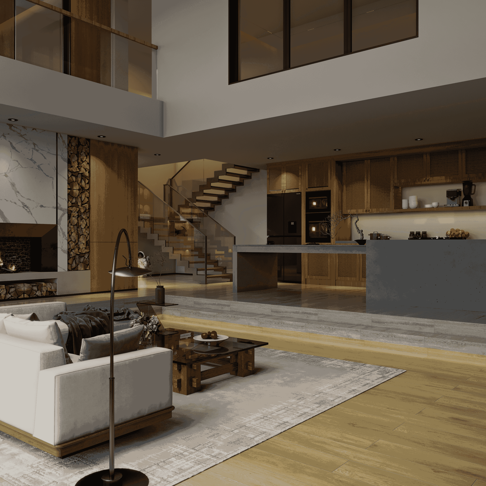
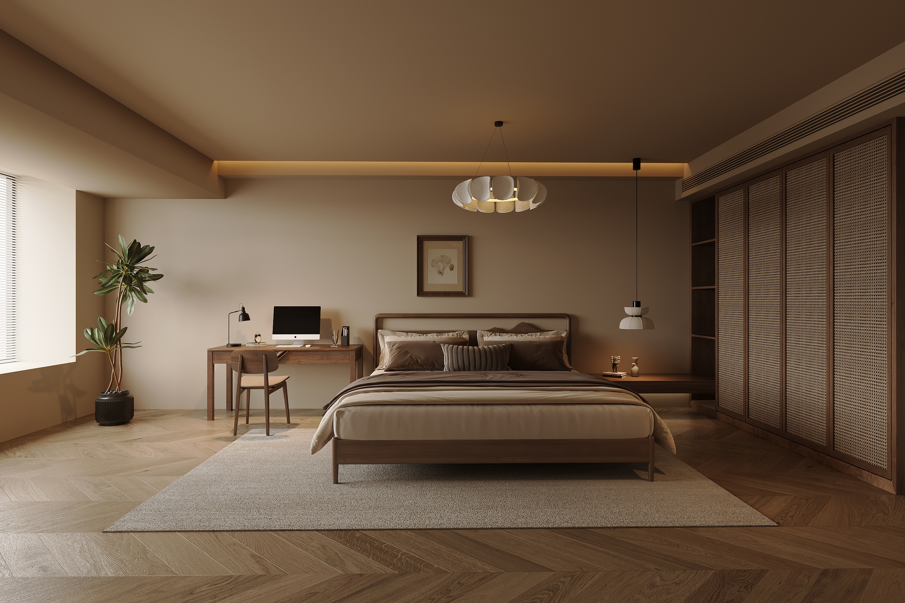
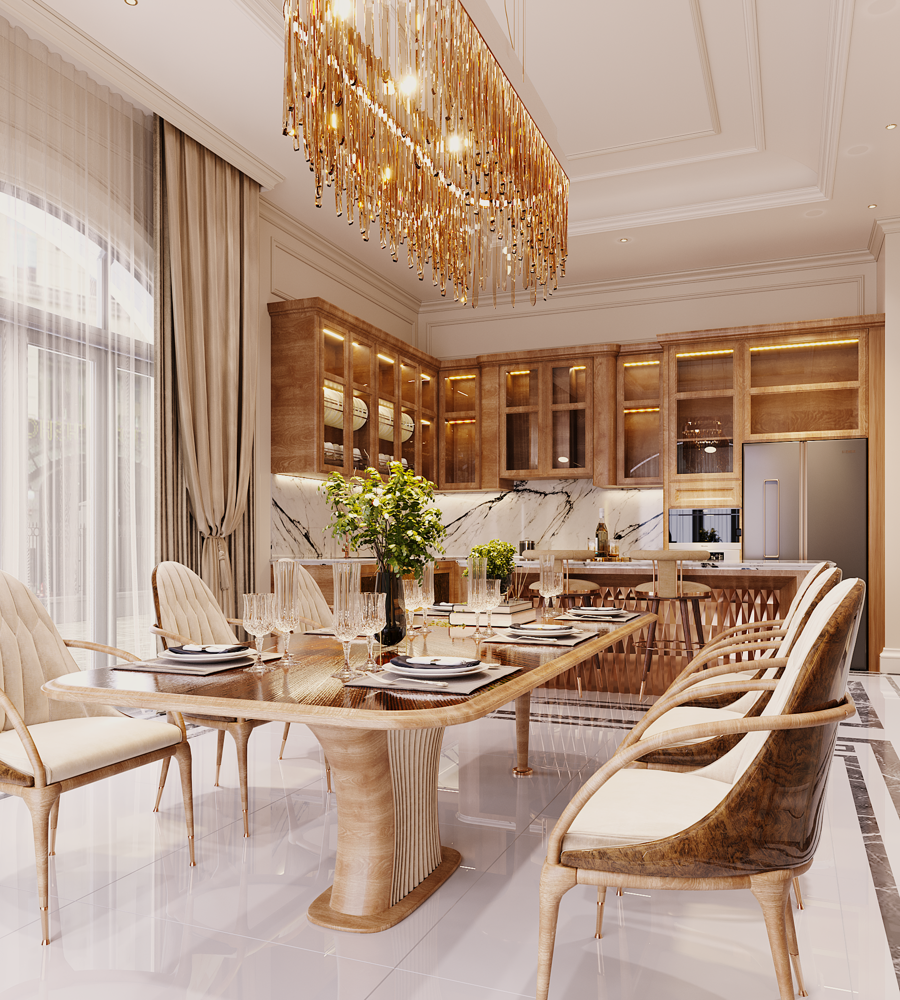
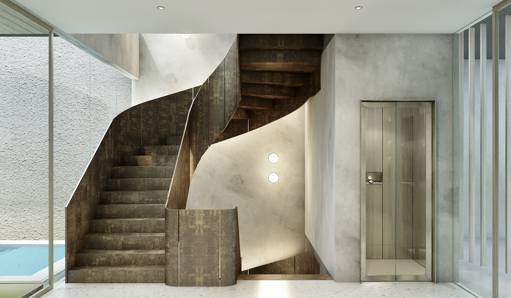
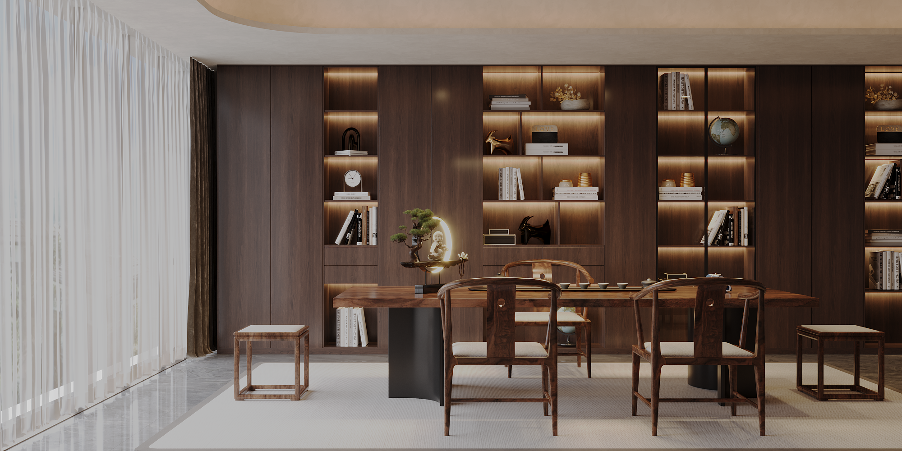

SKY GARDEN BSD
Creating spaces through Interior Design and 3D visualization.





My approach combines spatial thinking, material composition and realistic visualization. I enjoy turning an early design idea into a clear visual story that clients, architects and contractors can understand.
I focus on creating images that feel warm, spacious, intentional and believable.